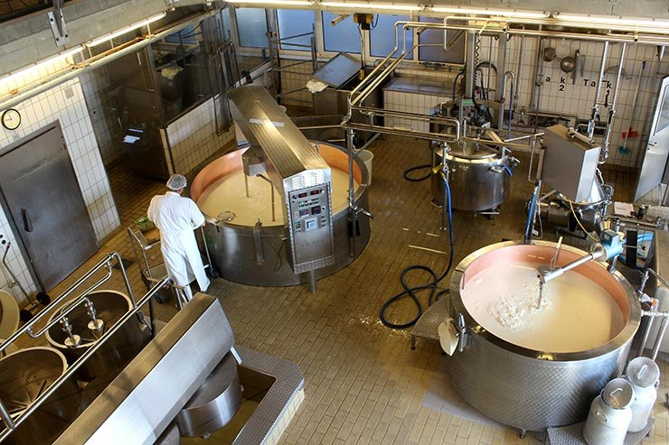

Somos a Queijito Express, uma empresa brasileira com mais de 20 anos de atividade na indústria de queijos.
Detentora de tipos como Gouda, Cottage, Ricota, Gorgonsola, Mozzarela, Mascarpone, Provolone, entre outros
Nossa representatividade no mercado, conta com referencias muito relevantes e carregam valores que simbolizam respeito pelo consumidor, excelente relação qualidade/preço.
Com mais de 1.200 funcionários, distribuídos em três fábricas localizadas em São Bernardo do Campo (SP), Cascavel (PR) e em Sete Lagoas (MG), temos orgulho de estarmos presentes em praticamente varias refeiçoes diarias dos brasileiros